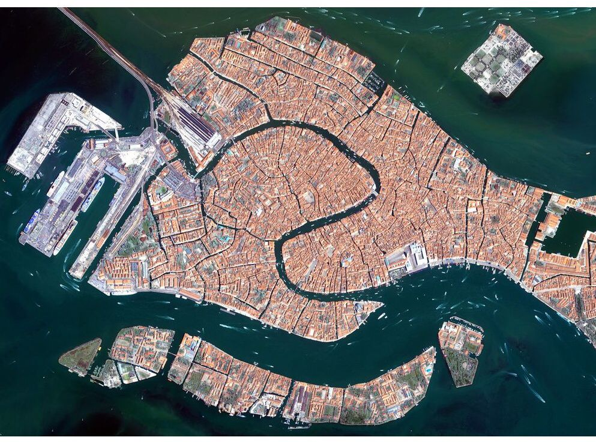
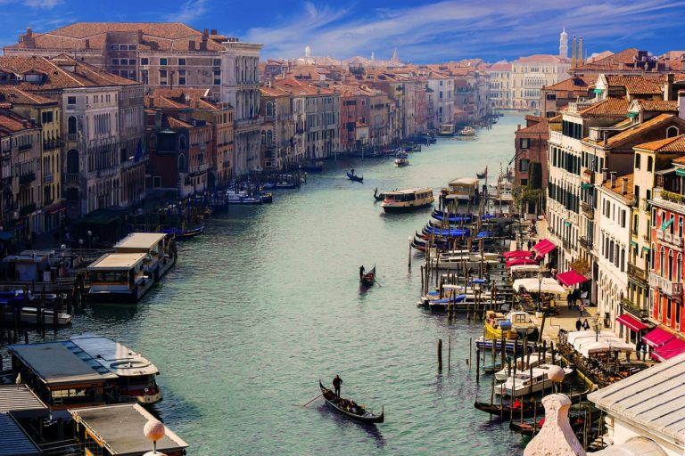
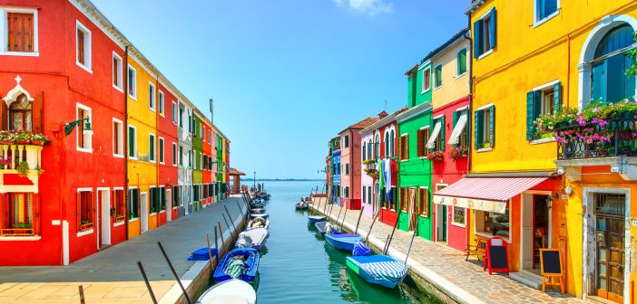
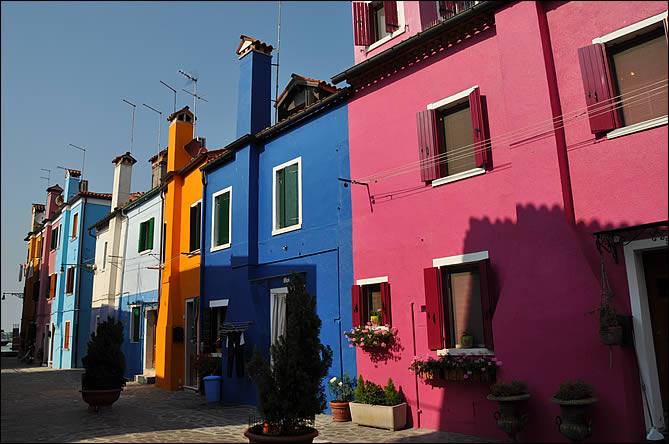
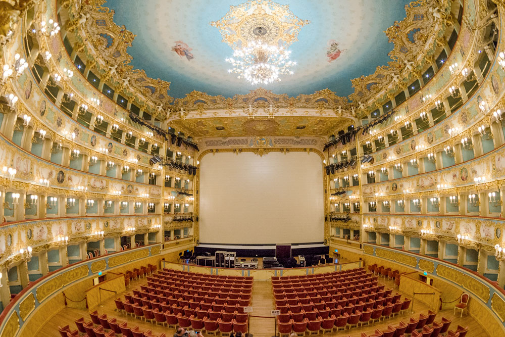
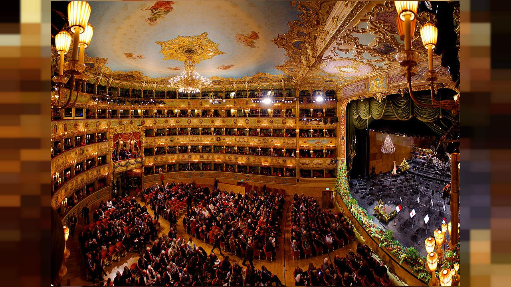
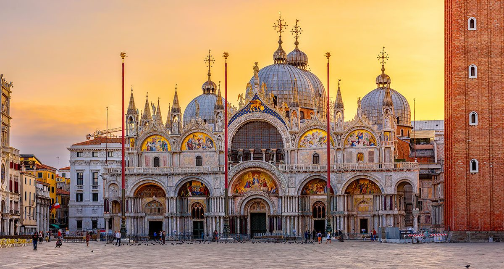
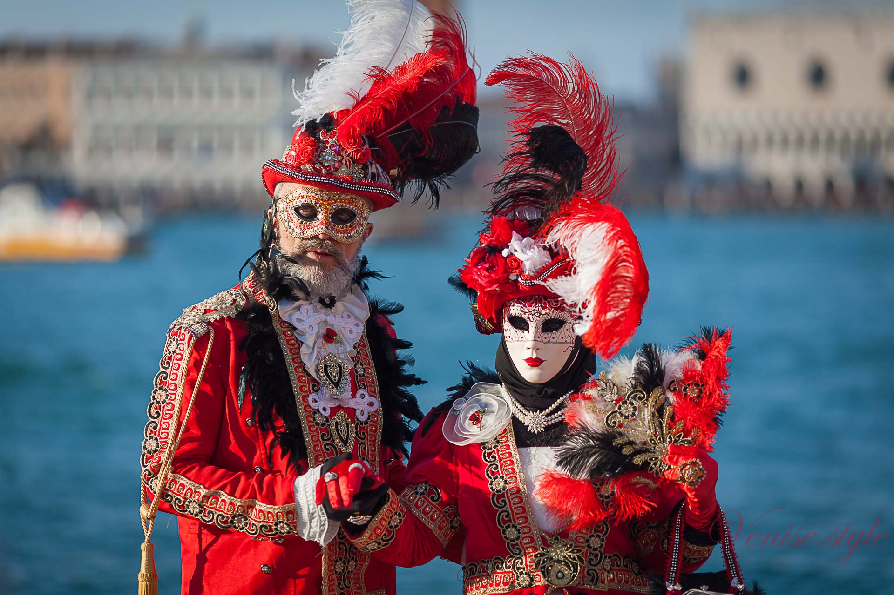
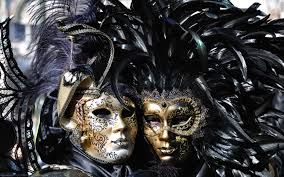

Venise est une des villes les plus incroyables d’Italie. La Cité des Doges est riche d’une longue histoire à la fois fascinante et tourmentée. Elle dispose d’un impressionnant patrimoine architectural et culturel. A ses édifices et palais historiques s’ajoutent des évènements internationaux comme le carnaval de Venise et d’innombrables musées tout aussi captivants. En parfaite harmonie, ils font de Venise l’un des principaux pôles touristiques du pays, mais aussi une destination les plus prisées au monde
Le Grand Canal de Venise est sans doute une des plus belles avenues du monde. Mesurant 4 km de long et 50 à 70 m de large, il débute à partir de la place de Saint-Marc au sud de Venise et se termine près du pont de la Liberté au nord-ouest de la ville. Ainsi, il divise la ville de Venise en deux. Sur la rive droite, on peut trouver les quartiers de San Marco, Cannaregio et Castello ; et sur la rive gauche les quartiers de Dorsoduro, San Polo et Santa Croce.
 L'île de Burano est située dans le Nord de la lagune, accessible en Vaporetto. L'île de Burano est reconnaissable de loin. En effet, lorsque vous approcherez de l'île vous verrez une explosion de couleurs. Toutes les maisons sont peintes dans des couleurs vives. Traditionnellement, les femmes de l'île peignent les maisons pour que leurs maris pêcheurs les voient de loin !
 Le Théâtre de La Fenice est une étape incontournable pour quiconque visite Venise : parmi les plus beaux, voire même le plus beau des théâtres lyriques du monde, il a constitué dès sa création une prestigieuse scène mondiale et a accueilli dans ses salles certains des artistes et des musiciens les plus importants de l’histoire de l’opéra. Le théâtre de La Fenice, née de la volonté d'une société formée d’anciens propriétaires de scènes de théâtre, fut inauguré en 1792 sur le projet de Giannantonio Selva. Depuis cette date, il a été la proie des flammes à deux reprises : d’abord en 1832, il fut alors reconstruit sur le projet de Giovanni Battista et Tommaso Medusa ; puis un autre incendie eut lieu en 1996 et le théâtre fut de nouveau reconstruit en 2003, sur un projet d'Aldo Rossi.
 La basilique Saint-Marc a été et demeure encore le véritable coeur spirituel et politique de la splendide ville de Venise. Construite au IXe siècle, elle a toujours occupé un rôle déterminant dans la ville de la cité lagunaire. Il faut dire qu’auparavant, c’est en son sein qu’étaient consacrés les ducs de Venise ! Située sur la non moins célèbre place Saint-Marc, c’est le chef-d’oeuvre du magnifique quartier de San Marco. Aujourd’hui, elle accueille de très nombreux touristes qui ne passeraient pour rien au monde à côté de sa visite.
Le carnaval de Venise est une fête traditionnelle italienne remontant au Moyen Âge. Les couleurs, les formes, les costumes et les masques sont au rendez-vous. Il attire des foules considérables venues du monde entier. Il commence dix jours avant le Mercredi des Cendres et se poursuit jusqu'au Mardi gras.
 